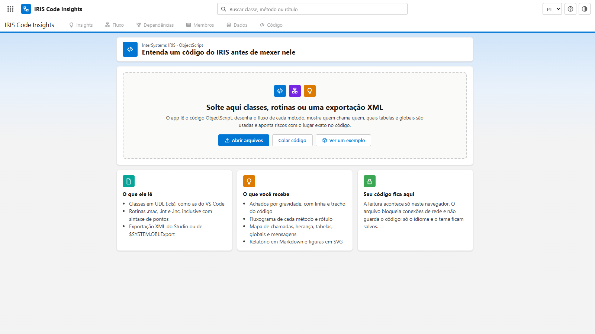
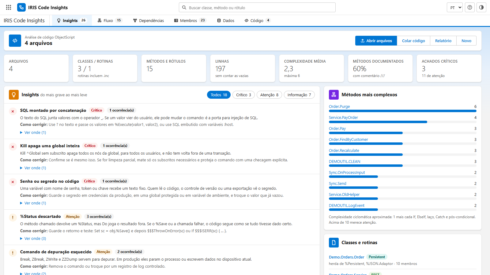
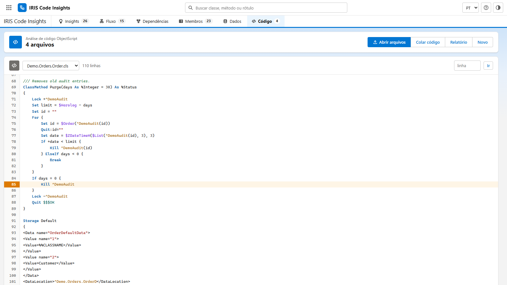
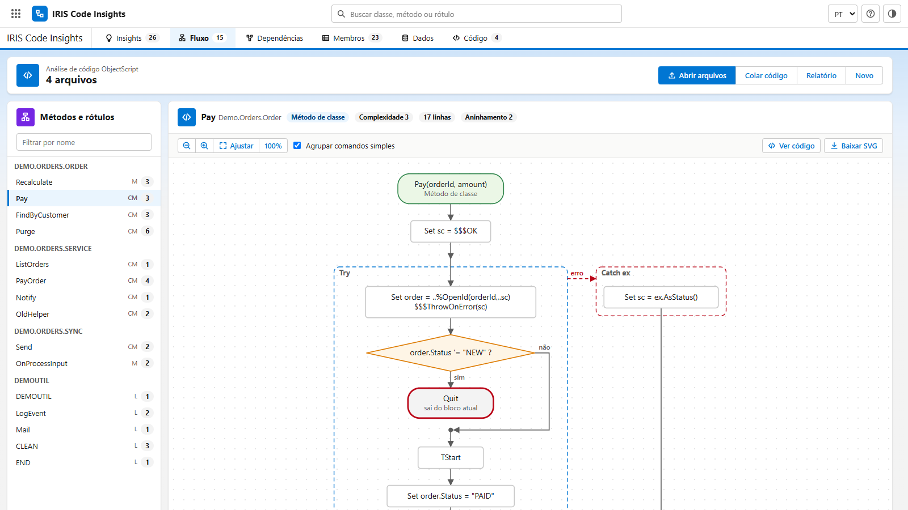
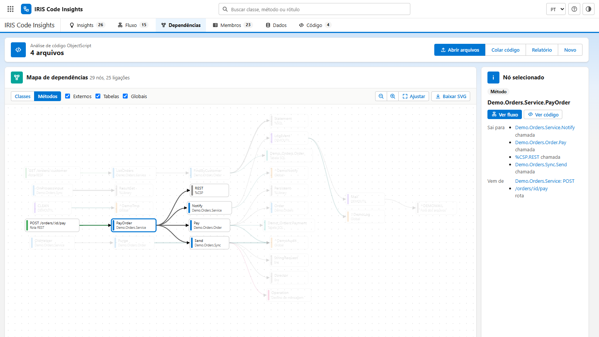
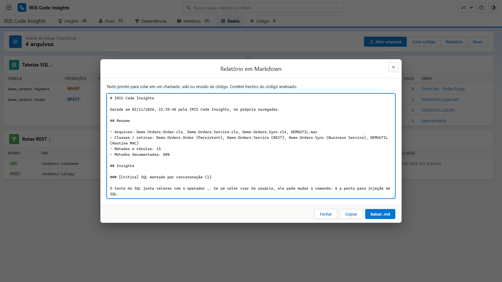
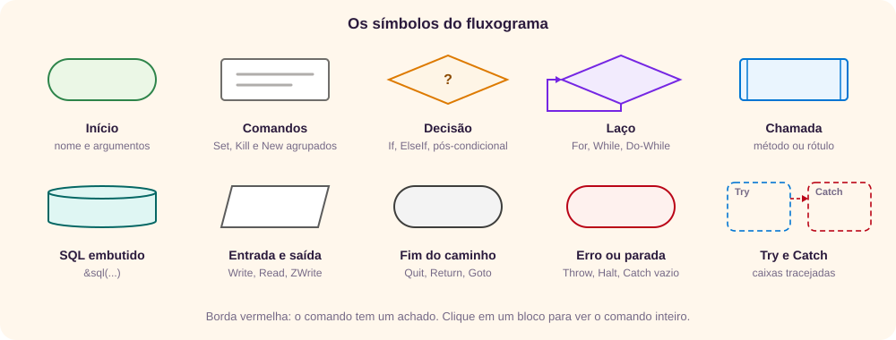
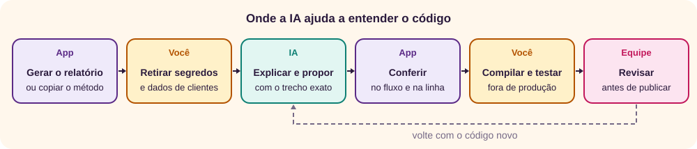

O que é o IRIS Code Insights
Antes de alterar uma classe do InterSystems IRIS, quase sempre vem a mesma pergunta: o que este código faz, quem o chama e onde ele pode quebrar? O IRIS Code Insights lê classes e rotinas ObjectScript e responde com três visões: achados ordenados por gravidade, o fluxograma de cada método e um mapa de quem chama quem. [1]
É um único arquivo HTML, sem instalação, sem conta e sem servidor.

Como o app trata o seu código
- Nada sai do seu computador. O arquivo bloqueia conexões de rede, e a leitura acontece no navegador.
- O código não fica guardado. Ao fechar a página, a análise some. O app só guarda o idioma e o tema.
Como levar o código ao app
O app aceita quatro formatos. Abra vários arquivos juntos: só assim ele consegue ligar uma chamada de uma classe ao método de outra.
| Formato | Exemplo | O que o app faz |
|---|---|---|
| Classe em UDL | Demo.Orders.Order.cls | Lê a declaração, os membros, a documentação /// e o código de cada método |
| Rotina | DEMOUTIL.mac, .int | Separa os rótulos e lê o código de cada um, inclusive a sintaxe antiga com pontos |
| Include | Demo.inc | Lista as macros #define |
| Exportação XML | demo.xml | Converte cada classe e rotina para UDL e lê como acima |
Três jeitos de obter os arquivos
- VS Code: com a extensão InterSystems ObjectScript, use o comando ObjectScript: Export Code from Server. Por padrão, os arquivos vão para a pasta
srcdo workspace. [2] - Terminal do IRIS: o método
Exportda classe%SYSTEM.OBJgera um XML com os itens pedidos, como classes e rotinas. [3]
Do $SYSTEM.OBJ.Export("Demo.*.cls","/tmp/demo.xml")- Colar: em Colar código, cole uma classe, uma rotina ou um XML. O nome do arquivo é opcional: sem ele, o app reconhece o tipo pelo conteúdo.
Roteiro: analisando o exemplo
Use o exemplo do próprio app: quatro arquivos fictícios, escritos para mostrar os achados. Há uma classe persistente de pedidos, uma API REST, um business service e uma rotina antiga. O que segue é exatamente o que você verá.
1. Abra o exemplo e leia os indicadores
- Abra o app e clique em Ver um exemplo.
- Confira o topo: 4 arquivos, 3 classes e 1 rotina, 15 métodos e rótulos, 197 linhas, complexidade média 2,3 (máxima 6), 60% dos métodos documentados e 3 achados críticos, com 11 de atenção.
- Os filtros mostram 18 tipos de achado: 3 críticos, 8 de atenção e 7 de informação.

2. Vá do achado à linha
- No achado Kill apaga uma global inteira, clique em Ver onde (1).
- Clique em Order.Purge. A aba Código abre na linha 85, destacada:
Kill ^DemoAudit. - Repare na linha 79:
Kill ^DemoAudit(id)apaga só um nó e não gera achado. A diferença é o subscrito.

3. Leia o fluxo de um método
- Abra a aba Fluxo e escolha Pay, na lista à esquerda.
- O corpo está dentro de uma caixa Try, ligada à caixa Catch ex por uma seta tracejada vermelha: o caminho do erro.
- O losango
order.Status '= "NEW" ?leva a um Quit com borda vermelha e a nota sai do bloco atual.

Por que a borda vermelha? Segundo a documentação, um Quit sem argumento dentro de um Try leva a execução para a primeira linha depois do Catch, e não para fora do método. [4] Aqui a linha seguinte é Quit sc, então o efeito é o esperado. Mas, se alguém incluir código depois do Catch, ele também vai rodar para pedidos que não são novos. Return deixaria a intenção explícita. [6]
No mesmo método aparecem mais três achados: Do order.%Save() descarta o %Status, o &sql não confere SQLCODE e o TStart não tem TRollback no Catch.
4. Veja quem chama quem
- Abra a aba Dependências e clique em Métodos.
- Clique no nó PayOrder. O caminho fica em destaque: a rota
POST /orders/:id/paychega a ele, e ele chamaNotify,PayeSync.Send.

5. Confira os dados usados
A aba Dados mostra duas tabelas SQL e quatro globais. A global ^DemoAudit é lida, gravada, apagada com Kill e travada com Lock, em 8 usos. A rota REST e a mensagem para Demo.ERP.Operation também aparecem. Essa classe de destino não está nos arquivos.
6. Gere o relatório
- Clique em Relatório.
- Revise o texto e use Copiar ou Baixar .md.

Resultado: em poucos minutos você sabe por onde começar. Há uma senha no código, um SQL vulnerável a injeção e um Kill que apaga a auditoria inteira. Também já sabe quais métodos e tabelas cada correção afeta.
Como ler os insights
Cada achado é uma regra simples sobre o texto do código, e estas são as condições exatas. Um achado diz onde olhar, não que há um defeito.
Crítico
| Achado | Quando aparece | Por que importa |
|---|---|---|
| Kill apaga uma global inteira | Kill ^Nome, sem subscrito | Apaga todos os nós da global |
| Quit com valor dentro de Try ou Catch | Quit valor dentro de um desses blocos | A documentação diz que isso dá erro de compilação e indica Return [4] |
| SQL montado por concatenação | Um texto que começa com SELECT, INSERT, UPDATE, DELETE, CALL ou WITH, juntado com _ a um valor que não é texto fixo, ou %Prepare e %ExecDirect com _ | Risco de injeção de SQL. O SQL dinâmico aceita parâmetros ? [7] |
| Senha ou segredo no código | Variável com password, pwd, senha, secret, token, apikey ou credential no nome recebe um texto fixo de 3 caracteres ou mais | O segredo vaza com o código |
Atenção
| Achado | Quando aparece | Por que importa |
|---|---|---|
| %Status descartado | Do em %Save, %Delete, %DeleteId e afins, ou em um método dos arquivos que devolve %Status | A falha passa despercebida |
| SQLCODE não é conferido | O método tem &sql e não cita SQLCODE | 100 significa que não houve dados, e um valor negativo, erro [8] |
| Catch vazio | Bloco Catch sem comandos | O erro some |
| Quit dentro de Try sai só do Try | Quit sem argumento direto em um Try | A execução segue depois do Catch [4] |
| Quit com valor dentro de laço | Quit valor dentro de For, While ou Do-While | Não sai da rotina de dentro do laço. Use Return [5] [6] |
| Transação sem rollback garantido | TStart sem TRollback, ou sem Try, $ZTrap ou $ETrap | TRollback desfaz a transação, e $TLevel diz quantas estão abertas [9] |
| Lock sem tempo limite | Lock sem :segundos (o Lock - não conta) | Sem tempo limite, o IRIS espera indefinidamente [10] |
| Código executado a partir de texto | Xecute, $Xecute ou indireção com @ | Texto vindo de fora pode virar comando |
| Comando de depuração esquecido | Break, ZBreak, ZWrite ou ZZDump | Para o processo ou escreve dados |
| Halt encerra o processo | Halt (e não Hang) | Derruba quem chamou |
| Complexidade alta, método longo, aninhamento | Complexidade acima de 10, mais de 60 linhas de código ou mais de 4 níveis de blocos | Mais caminhos para testar e revisar |
Informação
- %ResultSet está obsoleto: a referência de classes marca
%Library.ResultSetcomo obsoleta e indica%SQL.Statementpara SQL dinâmico. A classe continua funcionando. [11] - $ZTrap ou $ETrap, Goto, privado sem uso nos arquivos, método sem documentação
///, endereço ou caminho fixo (URL, IP ou pasta) e classe que acessa global direto. - Chamada recursiva: sem condição de parada, as chamadas se acumulam até o erro
<FRAMESTACK>, que indica chamadas aninhadas demais. [12] - Trecho que o app não entendeu: o fluxograma e os achados daquele membro podem estar incompletos.
Indicadores e complexidade
A complexidade segue a ideia de McCabe: quantos caminhos independentes existem no método. [13] O app faz uma aproximação: 1, mais cada If, ElseIf, laço, Catch e pós-condicional. Serve para comparar métodos entre si. "Métodos documentados" conta os métodos de classe com comentário ///. Abaixo da lista, Verificações sem achados mostra o que foi procurado e não encontrado.
Fluxo
A aba Fluxo desenha um método ou rótulo de cada vez, a partir dos comandos do código. Escolha o método na lista: o número ao lado do nome é a complexidade. Os métodos com mais caminhos ficam com o número em laranja ou vermelho.

- Agrupar comandos simples junta comandos seguidos como
Set,KilleNewem um só bloco. Desmarque para ver um bloco por comando. - Clique em um bloco para ver o comando inteiro, a linha e os achados. Ver código abre a linha. Dois cliques em uma chamada abrem o fluxo do método chamado.
- Arraste o fundo para mover, use os botões de zoom ou Ajustar, e Baixar SVG para salvar a figura.
- Abaixo do desenho, Detalhes do membro traz a declaração, a documentação, quem ele chama, quem o chama e os dados que usa.
Dependências
A aba Dependências mostra o mapa de quem chama quem. As colunas seguem a direção das chamadas: quem chama fica à esquerda. Quanto mais grossa a linha, mais chamadas.
- Classes junta tudo por classe ou rotina e mostra a herança em linha tracejada roxa. Métodos mostra cada método, as rotas REST que chegam a ele e os destinos de mensagens.
- Externos, Tabelas e Globais ligam e desligam esses nós. "Fora dos arquivos" é uma classe ou rotina citada que você não carregou.
- Uma linha que volta para a esquerda, em traço curto, fecha um ciclo de chamadas.
- Clique em um nó para destacar as ligações dele. O painel à direita lista o que sai e o que chega, com atalhos para o fluxo e o código.
Membros, Dados e Código
- Membros: a tabela de todos os membros, com tipo, linhas, complexidade, aninhamento, documentação e chamadas. Clique no título de uma coluna para ordenar e use o filtro e o tipo para reduzir a lista.
- Dados: as tabelas SQL, com as operações e a forma (
&sql, SQL dinâmico ou Query da classe), e as globais, com o tipo de acesso: leitura, escrita, Kill ou Lock. A classe é ligada à tabela pelo nome SQL padrão: o pacote com_no lugar do ponto, mais o nome da classe, ou oSqlTableName. As rotas REST vêm doXData UrlMap, e as mensagens, deSendRequestSync,SendRequestAsynce dos<call target>de uma BPL. - Código: o arquivo com destaque de sintaxe. Escolha o arquivo, digite o número em linha e clique em Ir.
- Busca: o campo no topo encontra classes, métodos e rótulos em todos os arquivos.
Relatório e privacidade
Relatório gera um texto em Markdown com o resumo, os achados, os locais com o trecho do código e os métodos mais complexos, para anexar a um chamado, a uma revisão de código ou a uma wiki.
Novo volta à tela inicial e tira a análise da memória. Os arquivos no seu computador não mudam.
Prompts de IA
O app mostra onde olhar. Ainda falta entender o porquê, decidir a correção e explicá-la para a equipe. Uma IA ajuda nessas três tarefas, mas também erra com segurança: inventa métodos de sistema, confunde Quit com Return e propõe código que não compila. Trate a resposta como rascunho de um colega apressado. Para escrever prompts melhores, veja o tutorial de prompts.

Antes de colar: código é propriedade da empresa e pode trazer senhas, endereços e regras de negócio. O app não envia nada para a rede, mas o serviço de IA recebe tudo o que você colar nele. Retire os segredos que o app apontou, troque nomes de clientes e siga a política da sua organização para uso de IA.
Troque os trechos entre colchetes e cole na ferramenta de IA que você usa. Cada prompt funciona sozinho.
1. Priorizar os achados
Em Relatório, use Copiar, revise o texto e cole no fim do prompt.
Você é um desenvolvedor experiente em InterSystems IRIS e ObjectScript.
Abaixo está o relatório de uma ferramenta que lê o código sem compilar.
Contexto: [o que o sistema faz e o que você precisa mudar]
Com base só no relatório:
1. Ordene os achados pelo risco real para este contexto e diga por quê.
2. Aponte os que podem ser falsos positivos e o que conferir no código para decidir.
3. Sugira a ordem de correção, agrupando o que pode ir na mesma mudança.
4. Separe o que está no relatório do que é suposição sua.
Não invente classes, métodos nem comportamentos do IRIS. Se faltar informação, diga qual.
Relatório:
[cole o relatório]2. Explicar um método
Na aba Fluxo, use Ver código e copie o método. Em Detalhes do membro, copie as listas Chama e Chamado por.
Explique o método ObjectScript abaixo para alguém que vai mantê-lo.
Classe: [nome da classe e o que ela representa]
Quem chama este método: [lista]
O que ele chama: [lista]
Código:
[cole o método]
Responda:
1. O que o método faz, em poucas frases.
2. Os caminhos possíveis, incluindo erros e saídas antecipadas.
3. O que ele lê e grava: propriedades, globais, tabelas e transações.
4. Pontos frágeis, citando a linha.
Lembre que Quit sem argumento dentro de Try sai só do bloco Try. Se não souber o que um método chamado faz, diga, em vez de supor.3. Corrigir um achado
Copie o nome e a explicação do achado no app e o trecho de código ao redor da linha. Peça a menor mudança possível.
A ferramenta apontou este achado em um código ObjectScript do InterSystems IRIS:
Achado: [nome e explicação do achado]
Linha: [número]
Trecho:
[cole o método ou as linhas ao redor]
1. Confirme se o achado procede neste trecho e explique por quê.
2. Proponha a menor correção possível, mostrando o código antes e depois.
3. Diga o que muda no comportamento e o que pode quebrar em quem chama.
4. Diga como testar a correção.
Use só recursos que você sabe que existem no IRIS. Se não tiver certeza da sintaxe, avise.4. Quebrar um método complexo
Use os métodos do cartão Métodos mais complexos. Peça para manter o comportamento, porque trocar Quit por Return pode mudar o fluxo. [5] [6]
O método ObjectScript abaixo tem complexidade [número] e [número] linhas.
[cole o método]
Proponha uma reorganização que:
1. Mantenha exatamente o mesmo comportamento, inclusive o retorno de %Status e as transações.
2. Extraia partes com propósito próprio para métodos privados com nomes claros.
3. Use Return quando a intenção for sair do método, e explique cada troca de Quit por Return.
4. Liste os casos de teste que provam que nada mudou.
Mostre o código completo. Não renomeie métodos públicos nem mude a assinatura.5. Documentar uma classe
Útil para o achado Método sem documentação. Confira cada frase contra o código: a IA pode descrever o que o nome sugere, e não o que o código faz.
Escreva comentários /// para a classe ObjectScript abaixo, no estilo da referência de classes do IRIS.
[cole a classe]
Para a classe e para cada método:
1. Uma frase sobre o que faz.
2. Os argumentos e o retorno.
3. Efeitos colaterais: globais, tabelas, transações e Lock.
Escreva em [idioma]. Descreva só o que o código mostra. Quando não der para saber, escreva "verificar" em vez de supor.6. Planejar testes
Peça casos de teste a partir do fluxograma: cada losango tem dois lados para cobrir.
Quero testar o método ObjectScript abaixo antes de alterá-lo.
[cole o método]
Formato de teste usado pela equipe: [ex.: %UnitTest.TestCase, ou descreva]
1. Liste os caminhos do método e um caso de teste para cada um.
2. Inclua os casos de erro: %Status de erro, exceção, SQLCODE diferente de 0.
3. Diga quais dados precisam existir antes e como limpá-los depois.
4. Escreva o código dos testes.
Não use métodos de asserção que você não tem certeza de que existem. Se precisar de um, pergunte.7. Modernizar código antigo
Serve para $ZTrap, %ResultSet e a sintaxe com pontos. A referência de classes indica %SQL.Statement no lugar de %ResultSet. [11]
Modernize o código ObjectScript abaixo, sem mudar o que ele faz.
[cole o código]
Troque, quando houver:
1. $ZTrap ou $ETrap por Try/Catch.
2. %ResultSet por %SQL.Statement, com parâmetros ? no lugar de concatenação.
3. Sintaxe com pontos e If de linha por blocos com chaves.
Para cada troca, mostre antes e depois e explique a diferença de comportamento, se houver. Aponte o que precisa ser testado com cuidado.8. Descrever a mudança para revisão
Use depois de corrigir: a IA organiza o texto, e você confere se cada afirmação é verdadeira.
Escreva a descrição de uma revisão de código para a mudança abaixo.
Problema encontrado: [achado e local]
O que foi mudado: [resumo ou diff]
Como foi testado: [descreva]
Estrutura:
1. Resumo em duas frases.
2. Motivo, com o achado e a linha.
3. O que muda para quem usa o código.
4. Riscos e como reverter.
5. O que o revisor deve olhar com atenção.
Não acrescente testes, números ou garantias que não estão aqui.Como conferir a resposta
| O que a IA fez | Por que desconfiar | O que fazer |
|---|---|---|
| Citou um método ou uma classe que não está no que você colou | Pode ter inventado | Procure na busca do app ou na referência de classes |
| Afirmou como um comando se comporta | Pode valer para outra versão ou estar errado | Compare com a documentação da InterSystems [4] [5] |
Trocou Quit por Return, ou o contrário | Muda o fluxo dentro de Try e de laços | Compare os fluxogramas antes e depois no app |
| Entregou código pronto | Pode não compilar ou mudar um caso raro | Compile, rode os testes e analise de novo no app |
| Sugeriu índice, Lock ou transação | Afeta outros processos | Avalie com quem administra o ambiente e teste fora de produção |
Erros comuns e limitações
Erros de leitura
- Tratar achado como defeito. Um
Kill ^Globalpode ser exatamente o que o método deve fazer. Confirme no código. - Analisar uma classe sozinha. Sem as superclasses e as classes chamadas, muitas ligações aparecem como "Fora dos arquivos".
- Procurar no XML a linha citada. Na exportação XML, as linhas são as do texto convertido, na aba Código.
- Achar que complexidade baixa é código certo. Ela mede caminhos, não correção.
Limitações
- Leitura sem compilar. O app não expande macros, não resolve herança fora dos arquivos e pode errar em construções raras.
- Só código de exemplo. O app foi testado com o exemplo fictício e com trechos escritos para o teste, não com código de produção.
- Outras linguagens. Métodos em Python ou outra linguagem não têm fluxograma. O app conta as linhas e as chamadas
iris.cls(). - Tamanho. Arquivos acima de 30 MB são ignorados. O mapa mostra até 180 nós, e a tabela de membros, até 1.500 linhas.
- Navegadores. Testado no Chromium. Firefox, Safari e celulares reais não foram testados.
Revisão rápida
Tente responder antes de abrir cada pergunta.
1. Por que abrir várias classes juntas?
Para o app ligar as chamadas entre elas. Sozinha, uma chamada a outra classe aparece como "Fora dos arquivos".
2. O que faz um Quit sem argumento dentro de um Try?
Sai só do bloco Try, e a execução segue na primeira linha depois do Catch. Para sair do método, use Return.
3. Por que Do obj.%Save() gera achado?
Porque %Save devolve um %Status, e Do descarta esse valor. Se a gravação falhar, ninguém fica sabendo.
4. Qual a diferença entre Kill ^DemoAudit e Kill ^DemoAudit(id)?
O primeiro apaga a global inteira. O segundo apaga só o nó daquele id.
5. O que significa SQLCODE = 100 depois de um &sql?
Que o comando rodou, mas não encontrou dados. Valores negativos indicam erro.
6. O que a borda vermelha marca no fluxograma?
Um comando ligado a um achado. Clique no bloco para ver qual.
7. O código sai do computador quando você o abre no app?
Não. O arquivo bloqueia a rede e não guarda o código. Mas, se você colar o código em uma IA, ele vai para o serviço dela.
8. A IA propôs uma correção que parece certa. O que fazer antes de publicar?
Compilar, testar fora de produção, abrir o código novo no app para ver se o achado sumiu e passar pela revisão da equipe.
Referências
- Giovani Perotto Mesquita, “IRIS Code Insights”, app em um único arquivo HTML, giovanipm.github.io/iris-code-insights.html.
- InterSystems, fluxo de trabalho no cliente com a extensão ObjectScript para VS Code, comando Export Code from Server, documentação, consultado em 02/11/2026, docs.intersystems.com.
- InterSystems, classe %SYSTEM.OBJ, método Export, referência de classes, documentação, consultado em 02/11/2026, docs.intersystems.com.
- InterSystems, comando TRY, seção sobre QUIT e RETURN, referência de ObjectScript, documentação, consultado em 02/11/2026, docs.intersystems.com.
- InterSystems, comando QUIT, referência de ObjectScript, documentação, consultado em 02/11/2026, docs.intersystems.com.
- InterSystems, comando RETURN, referência de ObjectScript, documentação, consultado em 02/11/2026, docs.intersystems.com.
- InterSystems, SQL dinâmico, parâmetros de entrada com ?, guia de SQL, documentação, consultado em 02/11/2026, docs.intersystems.com.
- InterSystems, valores de SQLCODE, referência de SQL, documentação, consultado em 02/11/2026, docs.intersystems.com.
- InterSystems, comando TROLLBACK e $TLEVEL, referência de ObjectScript, documentação, consultado em 02/11/2026, docs.intersystems.com.
- InterSystems, comando LOCK, tempo limite, referência de ObjectScript, documentação, consultado em 02/11/2026, docs.intersystems.com.
- InterSystems, classe %Library.ResultSet, marcada como obsoleta, referência de classes, documentação, consultado em 02/11/2026, docs.intersystems.com.
- InterSystems, mensagens de erro do sistema, <FRAMESTACK>, documentação, consultado em 02/11/2026, docs.intersystems.com.
- Thomas J. McCabe, “A Complexity Measure”, IEEE Transactions on Software Engineering, SE-2(4), 1976, p. 308–320, doi.org/10.1109/TSE.1976.233837.